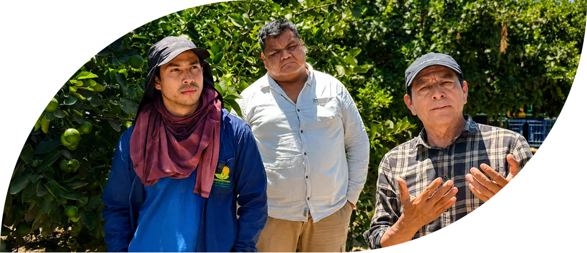
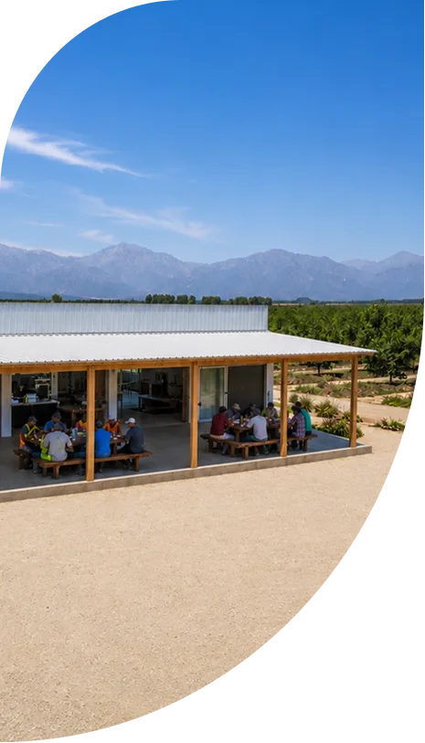

+60k
Hectáreas desarrolladas en conjunto para distintos rubros
Diseñamos, implementamos y operamos proyectos agrícolas bajo criterios ESG de manera sustentable con gestión institucional trazable y altos estánderes de producción.
TerraTech Agro es una gestora agroindustrial que integra su vasta experiencia en el sector agroexportador, desde una gestión hídrica, administración financiera empresarial y estructuración de predios con producción, control y gestión sustentable entre otros.
Pasa el cursor sobre cada pilar para ver su detalle.





+60k
Hectáreas desarrolladas en conjunto para distintos rubros
KPIs
Gestión agrícola con trazabilidad
+25
Años de alianzas y proovedores estratégicos